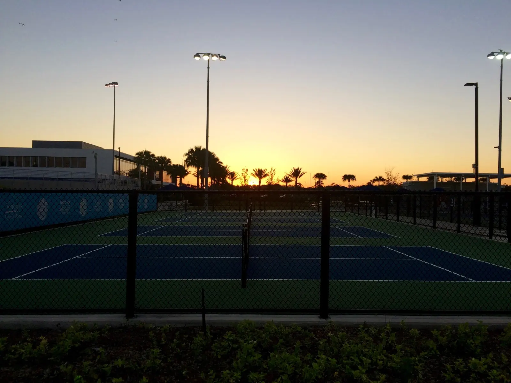

Playing piano and tennis were a significant part of my life growing up, and continuing to pursue both in college made my four years unique and rewarding.
My piano instructor would often use tennis as an analogy to illustrate her point. Tennis and piano seem like quite distinct pursuits; however, they have more similarities than differences in body, craft, and mind. While fairly obvious that tennis uses the entire body, it’s not as obvious that the same is true for piano. Piano is played not from the hands but from the shoulders and back; power is derived from the ground.
Both reward hard work as well as agility, touch, and variation. Pianists seek to develop nimble fingers and an ability to vary the volume, tempo, and accented notes. Tennis players train for quickness of the feet in changing direction and moving around the court. They look to strengthen their arsenal of shots, varying spin, depth, and pace.
Success requires embodying a confident, positive mindset. My tennis coach declared that the game is 90 percent mental. How many times did I think, don’t miss, and then miss the very next shot or note? Paradoxically, when we try too hard to not make mistakes, we tense up, resulting in exactly what we tried to avoid.
In the end, the player who comes out victorious may not have perfect technique, but rather, finds a way to win the most points. A good classical music performance isn’t defined by accurately striking every note, but rather, whether the performer conveyed the composer’s intention to the audience.
Both pursuits cultivate personal growth and instill virtues such as patience and courage. When embraced from the heart, they allow us to truly express ourselves.
Few things in this world are more satisfying than the crisp feeling of striking a tennis ball right in the sweet spot of the racket strings. Having played tennis since I can remember, I can’t imagine life without it. College tennis has by far been the most enjoyable and rewarding tennis experience for me. Over my four years playing on the college varsity team, I have found that tennis can (actually) be fun, it can be enjoyable, and how much I enjoy it doesn’t depend on the number of W’s on my record.
Growing up, I played tennis to do well in tournaments and get a top ranking so I could play tennis at a good college. In college I finally found true enjoyment in the game. Tennis helped me become a better leader and teammate. It taught me the refusal to give up after crushing losses, the resilience to win against opponents who are better than me on paper, and the courage to go for my shots when it counts.
Tennis is an amazing sport because anyone can learn it at any age. Tennis provides a strong community; I owe many of my continuing friendships to the sport. Most importantly, it is a lifelong sport. Bill Tilden (who won 10 Grand Slams and was the first American to win Wimbledon in 1920) said that tennis “can be played practically from the cradle to the grave — and it is apt to aid in postponing the latter many years…”
Tennis is an amazing sport that I plan to play for the rest of my life. It has been such a significant part of my life and changed it for the better.

One’s college tennis experience is really shaped by one’s teammates. My first year of college tennis was rough; there was a lot of drama and tension among teammates. At times it got to the point where I thought to myself, if this is what college tennis is, I’m not sure this is what I want to devote my time to for the next four years.
My sophomore season was much more enjoyable—a much improved team dynamic made a world of difference. For the first time in a while, I looked forward to practicing and competing. I found satisfaction in going for my shots and playing fearlessly. Off the court, I opened up and took more initiative, whether in cheering more, starting the conversation on senior gifts, or speaking up when something was bothering me. Tennis has meant so much to me, and I think that was reflected when I was voted captain.
But as captain of the tennis team, I doubted my ability to be a good leader. I was surprised how much people valued hard work and devotion towards the team, and how much they believed in me as a leader. I couldn’t let the team down. I had become more vocal and more engaged with the team that year, and was good at coordinating things. But I also knew my weaknesses—my introverted-ness, tendency to avoid conflict, my indecision. I didn’t have the natural ability to pump people up and bring them out of a bad mood.
My first challenge as a captain came before the year even began. We had a completely new dynamic with 4 seniors gone and 4 new first years, and to make the low team morale worse, my co-captain unexpectedly quit the team right before season started. I was in Europe in preparation for a semester abroad, so as you can imagine, it was a pretty stressful summer. While traveling, I helped convince a team member to stay on the team and worked to establish a relationship with the first years. Back on campus in the spring, I organized team bonding on the first day of classes. I also gave pep talks during our pregame huddles and worked to be a constant source of support for my teammates. Our team morale slowly improved, and we were able to put aside our personal grudges and persevere through the grueling season as a team to become league finalists. Despite a shaky start to the season, we were able to reunite and give it our all, up until the very last point. I learned that optimism is a choice, and that assuming the best in my teammates is the only way for everyone to become the best they can be.
Despite a disappointing senior year track record with my last season ending in a crushing loss to our rival school, I stayed positive and encouraged my team throughout the season that as long as we compete hard and give it our all, there are no regrets. When I was awarded the college’s highest honor for scholar-athletes, my coach could not have been prouder. To him, success was more than the number of wins. It was becoming a better teammate and leader. Leading the tennis team challenged me not just to excel but also to lead and help others thrive. I learned that, more than anything, success is about being there for your teammates and about the personal growth achieved. Four years as a student-athlete has taught me resilience and how to rebound from failure. I found that leadership comes in conspicuous ways, like giving pep talks, and subtler ways, like helping a freshman become a better doubles player. My four seasons have been defined by the relationships built, the ups and downs, and the life skills I’ve developed as a result.
While I was trying to lead the team, I was simultaneously preparing for a solo piano recital that was to be the culmination of my four years of music study. Similar to the doubts I faced as a captain, I doubted my ability to perform a solo recital, especially restarting piano after a long hiatus. Thankfully, my instructor, with her light spirit and brilliant imagination, never stopped believing in me and helped me trust in the notes, just as my tennis coach and teammates had the confidence in me that I needed to trust in my shots and pull through in tight matches. As a captain, I slowly found my voice through giving pep talks and expressing myself, even when the thought of doing so stressed me out. In my recital, my hours of practice and playing in front of others prepared me to be confident onstage and able to fully express myself through the music. When I injured my arm in tennis, my instructor told me I would have to choose between piano and tennis. But I prevailed. Together, the experiences gave me the confidence to do and succeed in what you feel you aren’t qualified to do, the patience to work at something until you get it, and the courage to go for it when it counts. My experiences have shown me what I am capable of.
My experiences as a student, musician, athlete, and leader have empowered me to be a positive impact to the future teams I find myself in. I would take that to be a real success.
~ January 5, 2021 ~
Yesterday after lunch, I went out to hit with my dad. Now that I don’t play tennis everyday anymore, it always feels good to step out onto the court and strike the ball — I always get a good workout in and it’s a refreshing break from running or other exercise routines. My backhand felt particularly good — I just wish I had had more control and been this comfortable and confident in my backhand while competing in college, when it really mattered. Prior to college, my dad and I had argued a lot about my backhand technique — I preferred to hit it like my forehand, with a loop in my swing, whereas my dad was a proponent of keeping it as simple as possible, i.e. just bringing it back and swinging forward, without creating the C-shape in the backswing. And now my backhand feels great, with a big swing and all. What a waste of emotional energy and pain, all the fighting and arguing and yelling we did! I remarked. We didn’t put enough effort into improving your backhand until it was too late, my dad remorsefully agreed.
Tennis has been such a huge part of my life — you could say it was my daily obsession for most of my life — it was my life up until college. Yet at the same time, tennis is inconsequential in the grand scheme of things — it will have nothing to do with my career, it will not determine my success or happiness in life, and it definitely will not determine whether I go to heaven after I die! And now I just play tennis for fun?? As a social event?? What was the point of all that pain and suffering I went through to become better than others at hitting a ball into a green rectangle??
I am still grappling with the weirdness of it all. And yet, tennis remains a part of my retired-athlete life. It has shaped who I am to this day. It has influenced my family dynamic, my enthusiasm for the outdoors and athletics, my work ethic, and my friendships (many which were made through the game). It has challenged me to deal with all kinds of people, and helped me become a better team player and leader. I can say with confidence that it has changed my life for the better. I owe a part of my identity to the game.